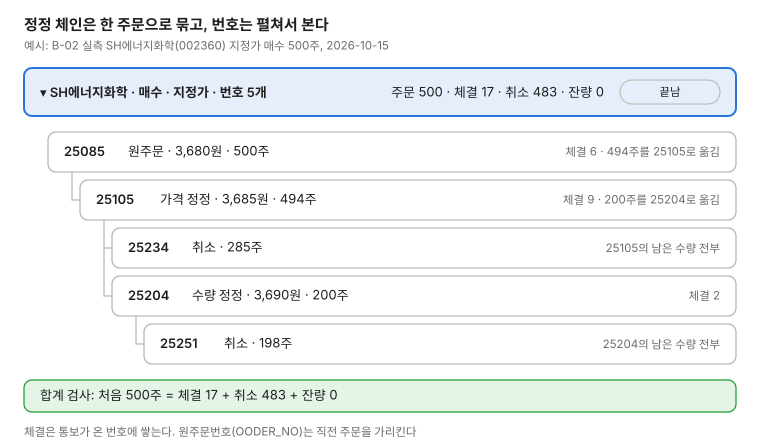

주문 체인 행
주문 한 건을 한 행으로 보이고, 펼치면 정정·취소로 생긴 번호를 원주문번호(OODER_NO)를 따라 나무로 보인다. 쓰는 화면: 주문, 미체결 주문 취소.

- 접힌 행의 수량은 체인 합계다: 체결 합, 취소 합, 잔량 합
- 정정 전에 체결된 수량은 원래 번호에 남는다(25085의 6주)
- 취소는 그 번호의 남은 수량만 취소한다. 떼어 낸 번호(25204)는 영향을 받지 않는다
- 합계 검사가 맞지 않으면 일별 조회로 바로잡고, 그동안 경고색으로 보인다(제안)